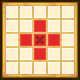
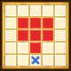
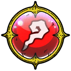
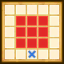

| Lv: | 140 |
|---|---|
| HP: | |
| MP: | |
| ATK: | |
| DEF: | |
| AGL: | |
| WIS: | |
| Move: | |
| Weight: | 70 |
| Weaknesses: | |
/ | |
||
|---|---|---|---|---|---|
| Resistances: | |
/ | |
||
| Immunities: | |
| Family: | Role: | Element: |
|---|
Note: All perks/abilities denoted with an * are using unofficial translations
| Abilities | ||||||
|---|---|---|---|---|---|---|
| Level | Type | Name | MP | Element | Range | Description |
| 1 |  |
Dark Multiheal | 94 |  |
 1-3 (incl. self) |
Heals a major amount of HP and raises ATK, DEF, AGL, and WIS for all allies in area of effect for 3 turns (Times usable: 1) |
| 28 | Frost Broom* フロストブルーム |
121 |  |
 1-4 |
Deals major unreflectable Crack-type spell damage to 1 enemy, often puts to sleep | |
| 54 | Frozen Flower Flash* 氷華の連閃 |
103 | |
 Fan |
Deals moderate Crack-type martial damage (53 base potency) to all enemies in area of effect 5 times | |
| 82 |  | Blizzard Broom* ブリザードブルーム |
132 | |
 Front |
Deals major Crack-type spell damage to all enemies in area of effect |
| Base Perks | ||
|---|---|---|
| Level | Name | Description |
| 1 | Max HP +30 | Raises max HP by 30 |
| 1 | WIS +15 | Raises max WIS by 15 |
| 1 | Snowflake Aura* 雪花のオーラ |
Battle start, action start, or when revived: Reduces damage taken by 20% and raises spell and martial potency/recovery by 20% if the user's HP is 50% or over |
| 1 | Snowflake Aura* 雪花のオーラ |
Raises Crack-type potency of all allies (incl. self) by 50% This perk only activates inside the Temple of the Conductor |
| 1 | Snowflake Aura* 雪花のオーラ |
Raises the drop rate of Elemental Crystals obtained in the Temple of the Conductor by 5% This perk activates even when the unit is not in the party |
| 110, 120, 130, 140 | Spell Potency/Recovery +2% | Raises spell potency/recovery by 2% |
| 110, 120, 130, 140 | Martial Potency/Recovery +2% | Raises martial potency/recovery by 2% |
| Awakening Perks | ||
|---|---|---|
| Awakening | Name | Description |
| 1 | Freezing Magic* 凍てつく魔力 |
Action start on odd turns until turn 10: Raises Physical Res, Breath Res, spell and martial potency/recovery, and enables Crackforce for 3 turns |
| 2 | Frizz Res +25 | Raises Frizz resistance by 25 |
| 3 | Snowflake Formation* 雪花の陣 |
Action start: Triggers Snowflake Formation*, up to 3 times per battle (Snowflake Formation*: Generates spaces in rhombus area of effect (incl. self) that reduce damage taken by 15% for 3 turns for allies on those spaces only) |
| 3, 5 | Spell Potency/Recovery +5% | Raises spell potency/recovery by 5% |
| 3, 5 | Martial Potency/Recovery +5% | Raises martial potency/recovery by 5% |
| 4 | Sizz Res +25 | Raises Sizz resistance by 25 |
| 5 | Guardian of Cordania* グリストンの加護 |
Action start: Heals 10% of max HP and restores 8% of max MP |
| 1, 2, 3, 4, 5 | Stats Up | Raises HP, MP, ATK, DEF, WIS and AGL by 5% |